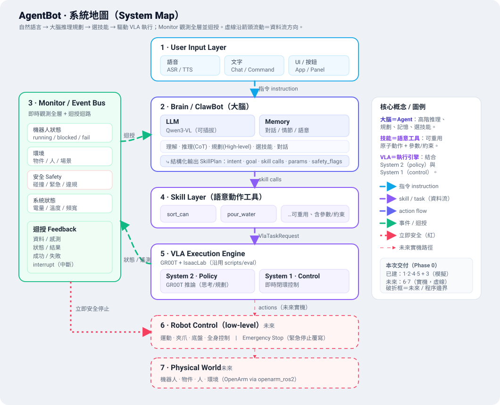
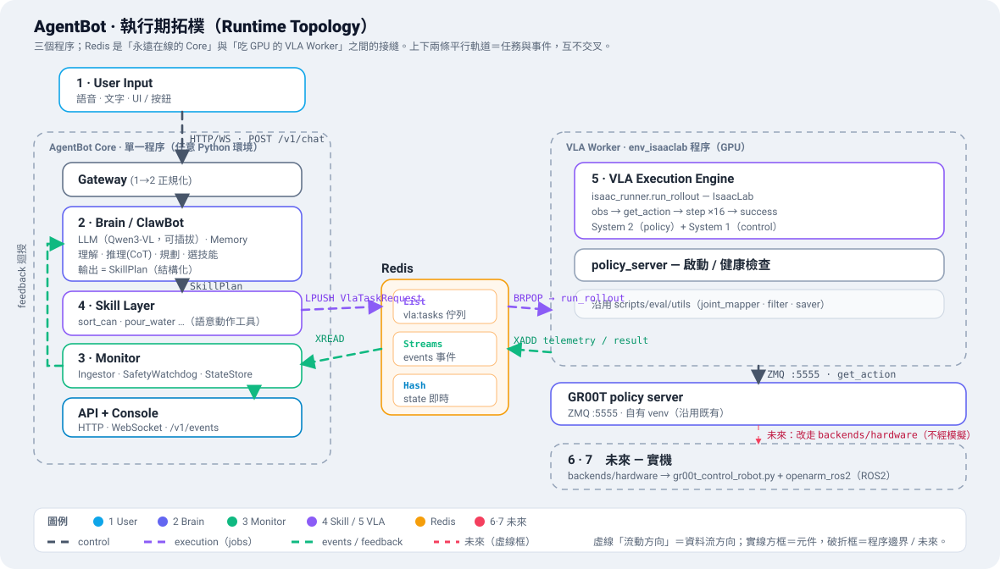
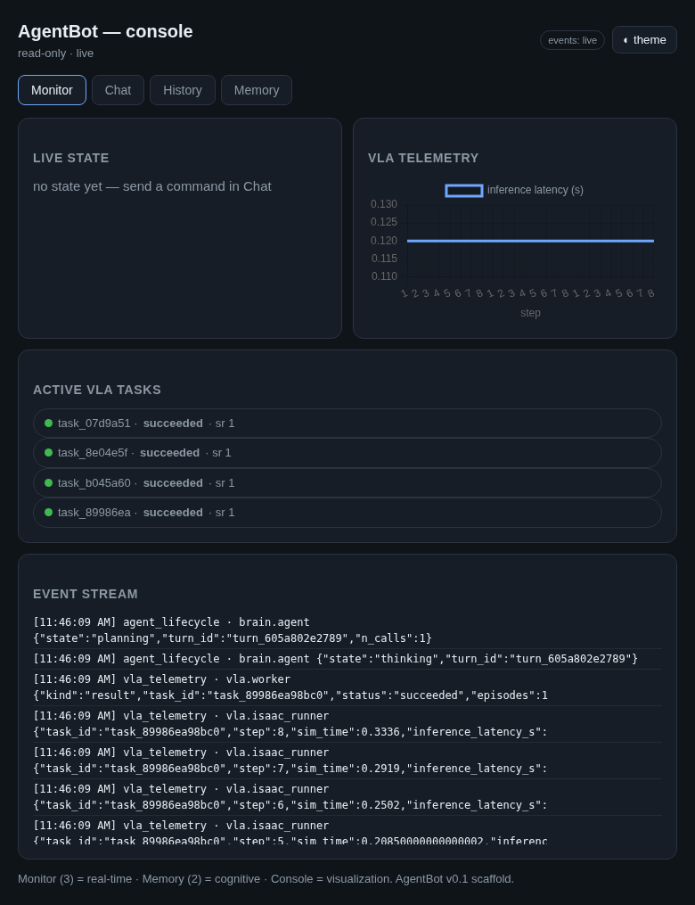

A natural-language command flows through an LLM brain that reasons, plans, and picks parameterized skills; each skill drives the GR00T VLA to execute — today in the IsaacLab simulator, tomorrow on the real OpenArm. A Monitor/event-bus watches every layer and closes the feedback and immediate-safety loops. This document is the architecture for building that, mapped onto the existing repo.
architecture.png，資料流已校正）。虛線沿箭頭方向流動＝資料流方向。
↗ 開啟獨立大圖（.svg）
The connection is not one big API. Three different communication shapes call for three
transports, and one hard constraint forces a process split: the VLA engine must run in the
env_isaaclab conda env and own a GPU, so block 4→5 has to cross a process (and possibly
machine) boundary.
Request/response + streaming dialogue for 1→2→4. FastAPI. Low-rate, user-facing.
4→5: submit a VlaTaskRequest → get a task_id. Decouples the heavy GPU
rollout from the request, exactly like the pipeline's detached workers.
The Monitor (3). Every layer publishes typed Events; Console, Brain feedback, and the
SafetyWatchdog subscribe. This is the diagram's Event/State + Feedback + red Immediate-Safety arrows.

| # | Step | Edge · transport |
|---|---|---|
| 1 | User speaks/types → Gateway.normalize() → UserMessage | 1→2 · POST /v1/chat |
| 2 | Brain loads skills as LLM tools + recent memory, reasons (CoT), emits a structured SkillPlan | 2→4 · in-proc tool-calling |
| 3 | Skill validates the call against its spec, resolves the checkpoint, builds a VlaTaskRequest, enqueues it | 4→5 · LPUSH agentbot:vla:tasks |
| 4 | VLA worker (env_isaaclab) dequeues, ensures the GR00T server is up, runs the IsaacLab rollout | 5 · BRPOP + ZMQ |
| 5 | Worker streams VlaTelemetry + a terminal VlaTaskResult as Events | 5→3 · XADD agentbot:events |
| 6 | Monitor ingests → live state; Console + Brain feedback subscribe; the Brain replies or continues the plan | 3→2→1 · WS /v1/events |
Immediate safety short-circuits this: any Event of type safety with
immediate=true trips the SafetyWatchdog synchronously (sim: abort the task; hardware:
ROS2 e-stop) — the red 立即安全停止 arrow in the System Map above.
| # | Diagram block | Component(s) |
|---|---|---|
| 1 | User Input — voice (ASR/TTS) · text · UI/button | brain/gateway.py + /v1/chat, /v1/chat/stream |
| 2 | ClawBot / Brain — gateway, LLM (Qwen3-VL), memory; reason · plan · select; structured output | brain/agent.py, llm_client.py, memory/ |
| 3 | Monitor / Event Bus — robot state · environment · safety · system; feedback loop | monitor/ — event_bus · state_store · safety · ingest |
| 4 | Skill Layer — parameterized semantic action tools | skills/ — base · registry · builtin/ |
| 5 | VLA Execution Engine (System 2 + System 1) — GR00T + IsaacLab | vla/ — worker · isaac_runner · policy_server · reuses scripts/eval/* |
| 6 | Robot Control (low-level) — motion/gripper/base; e-stop | future vla/backends/hardware.py |
| 7 | Physical World | future OpenArm via openarm_ros2 |
The schemas in agentbot/contracts/ are the protocol: one shared vocabulary,
serialized as JSON over both the API and the event bus, so every layer (and the future hardware backend)
speaks the same language. The "ClawBot Structured Output" box in the diagram is literally SkillPlan.
| Boundary | Message | Purpose |
|---|---|---|
| 1↔2 | UserMessage / AgentResponse | user turn in; NL reply + optional plan out |
| 2→4 | SkillPlan → SkillCall[] | intent + ordered, parameterized skill calls + safety flags |
| 4 | SkillSpec · .to_tool_schema() | declares params/constraints; exported as an LLM tool |
| 4→5 | VlaTaskRequest | task_name (gym id) · instruction · checkpoint (resolved) + checkpoint_name · params |
| 5→3 | VlaTelemetry / VlaTaskResult | per-step stream; terminal result + artifacts |
| any→3 | Event (+ RobotState, SafetyEvent, SystemStatus) | typed events on the bus |
{
"intent": "tidy the table",
"goal": "can on the orange plate",
"calls": [
{ "skill_call_id": "call_ab12",
"name": "sort_can",
"args": { "target_color": "orange" },
"safety_flags": ["avoid_human"],
"rationale": "user asked to sort onto orange" }
]
}{
"task_id": "task_77f0",
"skill_call_id": "call_ab12",
"embodiment": "sim",
"task_name": "Isaac-Can-Sorting-OpenArm-DexHand-v0",
"instruction": "place the can on the orange plate",
"checkpoint": ".../N1_7_fft_0615_150k_lr1e4_absolute_no_tune_visual",
"checkpoint_name": "n17_150k_lr1e4_absolute",
"gr00t_ver": "N1.7",
"params": { "target_color": "orange" }
}{
"name": "sort_can",
"description": "Pick up the can and place it on the plate of the given color.",
"input_schema": {
"type": "object",
"properties": {
"target_color": { "enum": ["orange","green"], "description": "..." }
},
"required": ["target_color"]
}
}{
"event_id": "evt_5c1a",
"type": "vla_telemetry",
"source": "vla.isaac_runner",
"task_id": "task_77f0",
"payload": { "step": 8, "sim_time": 0.33, "inference_latency_s": 0.12 }
}狀態 / 資料 / 記憶要算在 3·Monitor 還是另開一個？拆成三個關注點，不要混在一起 — they have different lifecycles, schemas, and consumers.
| Concern | Holds | Store | Owner |
|---|---|---|---|
| Monitor / Event Bus (3) | real-time events, live state, safety, feedback | Redis Streams + Hash | monitor/ |
| Memory (block 2) | conversation, episodic outcomes, long-term semantic (RAG) | SQLite + vector store | brain/memory/ |
| Console / 介面 | visualizes Monitor + Memory + artifacts | reads both (no store) | ui/ + api/ |
Why separate. The Monitor must stay light and real-time because the immediate-safety
path runs through it. The Brain's memory is cognitive data with a different schema and a durable lifecycle.
The Console is just a read-only view of both — folding it into the Monitor would drag the real-time layer
down. Episode videos / parquet / manifest reuse scripts/eval/utils/episode_data_saver.py.
HTTP + WebSocket control/event planes.
The protocol; JSON over API + bus.
Streams (events) · List (jobs) · Hash (state). One dependency, cross-process.
Conversation/episodic + semantic RAG (Chroma, optional).
Default Qwen3-VL (local, vision); adapters for Claude / OpenAI.
Mirrors scripts/pipeline/web/dashboard.py.
| Need | Existing asset |
|---|---|
| GR00T inference | python3 -m gr00t.eval.run_gr00t_server (ZMQ :5555) |
| Policy client / version abstraction | scripts/eval/utils/gr00t_client_adapter.py, policy_client_factory.py |
| Rollout loop (obs→action→step) | port scripts/eval/gr00t_infer_agent.py → vla/isaac_runner.py |
| Joint mapping · filter · saving · manifest | scripts/eval/utils/{joint_mapper,filter,episode_data_saver,run_manifest}.py |
| Server launch + readiness | lifted from scripts/eval/run_eval.py → vla/policy_server.py |
Swappable checkpoint registry (never hardcoded). Checkpoints are named in config
(vla.checkpoints) with a default_checkpoint pointer; VlaCfg.resolve_checkpoint(name|path)
resolves either a registry name or a literal path. Swap three ways: edit default_checkpoint, add an
entry, or pass checkpoint per request. Today's default is
n17_150k_lr1e4_absolute → …/N1_7_fft_0615_150k_lr1e4_absolute_no_tune_visual; the future
n17_150k_lr5e5 → …/N1_7_fft_0614_150k_lr5e5_no_tune_visual is already registered.
新增一個與 Isaac-GR00T/ · IsaacLab/ · scripts/ 並列的頂層 agentbot/ 套件（留在 monorepo，
共用 datasets/ · artifacts/checkpoints/）。No separate repo — keeps cross-layer imports and deployment simple.
agentbot/
pyproject.toml config/agentbot.example.yaml # swappable checkpoint registry lives here
agentbot/
settings.py # AppConfig + VlaCfg.resolve_checkpoint()
contracts/ common · messages · skills · vla · events # THE PROTOCOL
monitor/ event_bus · state_store · job_queue · safety · ingest # block 3 (Redis)
skills/ base · registry · builtin/{sort_can,pour_water} # block 4
brain/ gateway · agent · llm_client · memory/{store,conversation,episodic,semantic} # block 2
vla/ worker · isaac_runner · policy_server · backends/{sim,hardware} # block 5
api/ app · deps · routes_{chat,skills,vla,events} # wires 1·2·4·5
ui/ console.html (Monitor · Chat · History · Memory)
tests/ contracts · skills · registry · event_bus · gateway · brain
docs/agentbot_architecture.html # this report
embodiment is a first-class field on every request. Today embodiment=sim →
vla/backends/sim.py (IsaacLab). Switching to embodiment=hardware selects
vla/backends/hardware.py, which bridges the action chunk to the real robot via the existing
Isaac-GR00T/scripts/sim2real/gr00t_control_robot.py → ROS2 JointTrajectoryController → OpenArm
(openarm_ros2), and republishes /joint_states, /vla/diagnostics, and safety
back onto the same event bus (optionally through an MQTT↔ROS2 bridge). The Brain, Skill, and Monitor
layers do not change — only the backend.
| Phase | Scope | Status |
|---|---|---|
| 0 · Scaffold | This report + the agentbot/ package: contracts, services, event bus, API, console, tests. Demoable end-to-end with a fake VLA (no GPU). | delivered |
| 1 · MVP slice | Port isaac_runner.run_rollout from gr00t_infer_agent.py; real Qwen3-VL tool-calling; one skill drives a real IsaacLab episode. | next |
| 2 · Breadth | More skills, multi-step plans, episodic + semantic memory (RAG), and a hierarchical dashboard with control (drill-down System→process→block→task→episode; pause / abort / e-stop; pick checkpoint; trigger skills) on top of the read-only Console. | — |
| 3 · Hardware | backends/hardware.py → ROS2; safety on real signals; sim/real parity. | — |
The whole 1·2·4·5 + 3 chain runs in a single process with no Redis and no GPU (an in-proc fake VLA
executor stands in for block 5). A text command becomes a SkillPlan, the skill is dispatched with
a chosen checkpoint, the fake engine streams telemetry, and the Monitor ingests it — all visible on the
read-only Console below.

# 1. install — uv builds an isolated .venv from pyproject (不會動到你的 conda envs)
cd agentbot && uv sync
# 2. tests (no Redis / GPU)
uv run pytest -q # 23 passed
# 3. single-process demo (in-proc bus + fake VLA) — open http://localhost:8780
uv run uvicorn agentbot.api.app:app --port 8780
# 4. real, multi-process:
redis-server & # set backbone: redis in config/agentbot.yaml
uv run uvicorn agentbot.api.app:app --port 8780 # Core + Console
# VLA worker runs in env_isaaclab (has IsaacLab); install agentbot there once:
conda activate env_isaaclab && pip install -e . && python -m agentbot.vla.worker
uv run python -m agentbot.vla.worker --fake --selftest # no-GPU plumbing check
# swap the checkpoint: edit vla.default_checkpoint, or per request:
curl -X POST :8780/v1/skills/sort_can/invoke \
-d '{"args":{"target_color":"orange"},"checkpoint":"n17_150k_lr5e5"}'